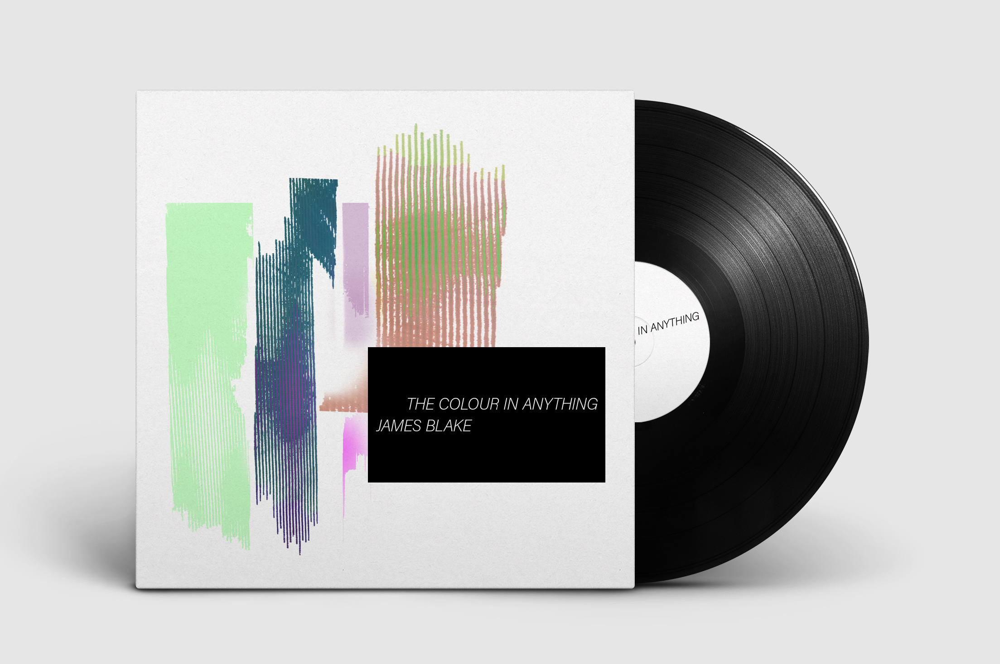

PROJECT
James Blake's The Colour in Anything
CONCEPT
A reimagination of The Colour in Anything’s cover art. Based on an interpretation of the album coupled with an article describing his production as “unparalleled, spacious, and impossibly textured.” The varying use of white and black creates space and texture, via color or type, is used as a motif throughout the design of the cover and album insert.
← RETURN →
